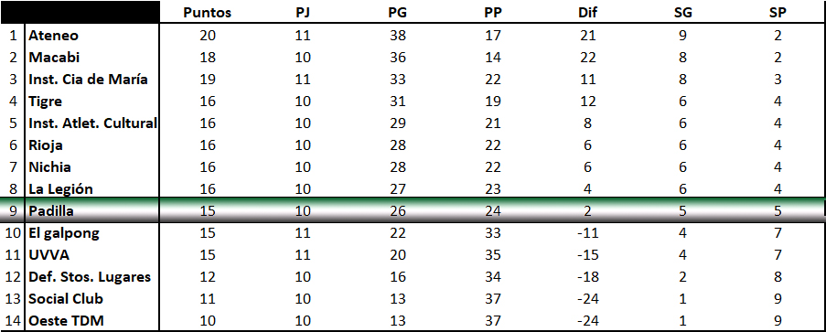

Padilla vs Nichia - Fecha 10
El verde de Martelli, ha disputado una nueva fecha de la Superliga 2022/23. En esta oportunidad el
equipo capitaneado por Alejandro Vígolo se enfrentó a Nichia. Esto sucedió en Villa Martelli, donde
Padilla hace las veces de local.
Padilla, por su parte inscribió en la lista de jugadores para esta fecha a: Miguel Barja, Maciel Farfán,
Nicolás Bellusci, Alejandro Vígolo, Jonathan Felscher y David Opazo. Nichia por su parte, inscribió solo
a 3 jugadores, ellos son: Maximiliano Huergo, Nicolás Iamarino y Mariano De Simone.
El encuentro comenzó a las 15hs y el primero de los puntos de la serie, el dobles, lo disputaron Barja y
Bellusci (Padilla), con Iamarino y Huergo, por el lado del visitante. No es un dato menor, decir que
todos los puntos, excepto el último, se disputaron a 5 sets, por lo que la extensión de los partidos fue
realmente prolongada. El primer punto de la serie sería para Nichia, luego de imponerse por 11-8 y con
aparente holgura en el juego. El conjunto visitante parecía sólido y el local parecía un tanto perdido.
Para el comienzo del segundo set, los locales, demostraron que corrigiendo un par de detalles podían
complicar al rival y se impusieron por el mismo marcador con el que perdieron el primer set. Llegaría el
3er set y nuevamente Padilla marcaría la diferencia, esta vez mas holgada que la anterior. El set
finalizó 11-6 para los de Martelli. Asi llegó el 4 set, y Padilla buscaría cerrar el partido para
quedarse con el primer punto de la serie, pero Nichia tenía otro planes y se lo llevó por un ajustado
12-10. El último set, Padilla pudo cerrarlo en el 10-8, pero Nichia se le puso 10 iguales. Luego pudo
volver a cerrarlo cuando estuvo 11-10 arriba, pero luego del minuto pedido por Padilla para armar la
táctica para jugar el siguiente punto, el visitante volvió a empatarlo. Padilla sacaría una vez mas y el
partido volvería a estar Match Point a su favor, esta vez 12-11. Una vez más, Nichia lo empataría y, con
el servicio de Nicolás “El Colo” Bellusci, Nichia obtenía su primer Match Point del encuentro y lo
aprovecharía cerrando el quinto set por 14-12 luego de casi 34 minutos de partido.
Jonathan Felscher calentando con Nico Bellusci
El segundo encuentro, lo jugarían Mariano De Simone por el lado del visitante, contra Maciel Farfán. Tal
como resultó en el dobles, Padilla comenzó como perdido, impactando pelotas de manera equivocada, sin
poder interpretar las intenciones del rival y auto recriminándose errores propios. Asi es como Nichia se
llevaría los dos primeros sets, cómodamente, 11-5 y 11-4. Luego vendría la levantada de cabeza por parte
de Maciel, que comenzaría a desplegar un juego sólido y bien orientado a que el rival no pudiera
lastimarlo. Maciel ganaría los dos siguientes sets por 11-7 y 13-11 y el segundo punto se definiría en
el 5to set. De Simone logró recuperar su juego y luego de un pelado 4to set, continuó con la misma
intensidad y esto le sirvió para hacerse con el 5to set por 11-8. Nichia se hacía con el segundo punto
de la serie, que se le ponía cuesta arriba a Padilla, y el resultado parcial era 0-2.
Al tercer punto de la serie, salieron Nicolás Bellusci para representar al verde de Martelli, mientras
que Maximiliano Huergo sería el rival por derrotar. Por primera vez en la serie, el local empezaría
ganando el primer set de un punto. En esta oportunidad, Nicolás Bellusci se pudo imponer por 11-9. Luego
vendrían dos reveses para él, Huergo ganaría por 11-6 y 11-9 el segundo y tercer set, respectivamente.
Para el 4 set, “el colo” pudo imponerse nuevamente por 11-7 y no estaba todo dicho. Finalmente se jugó
el 5to set y llegaría el primer punto de la serie para Padilla, Nicolás se impuso por 13-11 y la serie
ahora estaba 1-2.
Maciel disputa su partido con Mariano De Simone
El 4to punto de la serie, lo disputaron De Simone y Barja. Un nuevo partido que sería realmente largo,
con una duración de 36 minutos aproximadamente. Miguel Barja estuvo por momentos muy asertivo y por
otros, completamente errático, tal como había sucedido con Maciel en el 2do punto de la serie, por estos
sube y baja, se generó un partido que se pudo percibir como “raro”, donde de repente el dominio, y el
control de los puntos era totalmente de Padilla y nos permitían pensar que la serie se pondría 2-2, sin
embargo, luego llegaban las dudas y la serie podía cerrarse 3-1 para los visitantes. Esas dos
sensaciones se turnaban para ponerse en el foco de la escena. Finalmente Nichia se impuso por 3-2:
10-12, 11-4, 8-11-11-6 y 13-11. La serie ya estaba perdida, pero dentro de lo malo, el próximo punto
trataría de evitar que la derrota fuese por 4-1.
Los equipos de Padilla y Nichia previo al 3er tiempo
Nichia estaba 3-1 y pondría a jugar el último punto de la serie a Iamarino contra, quien jugara el
segundo punto de la serie, por Padilla, Maciel. Maciel se notó sólido, al tiempo que el visitante, no
mostró tener controlado el partido, en ningún momento, probablemente por saber que la serie ya estaba
ganada. Lo cierto es que Padilla pudo descontar, finalmente, la distancia en el marcador y cerró la
serie 3-2. Maciel ganó el quinto punto de la serie, por: 11-9, 11-13,-11-6 y 11-3.
Este resultado, lo pone a Padilla en el 9no lugar de la tabla general, con la misma cantidad de puntos
que el 11ro, que es UVVA. Recordemos que los últimos dos (13ro y 14to) descienden de categoría, mientras
que los puestos 11 y 12 juegan el repechaje para mantener la categoría. En este momento, si bien Padilla
tiene la misma cantidad de puntos que UVVA, que ocupa el puesto 11, la diferencia de partidos ganados
hace que los de Martelli estén 2 puestos por encima de los puestos de repechaje y en zona de playoffs.
Tabla de posiciones
